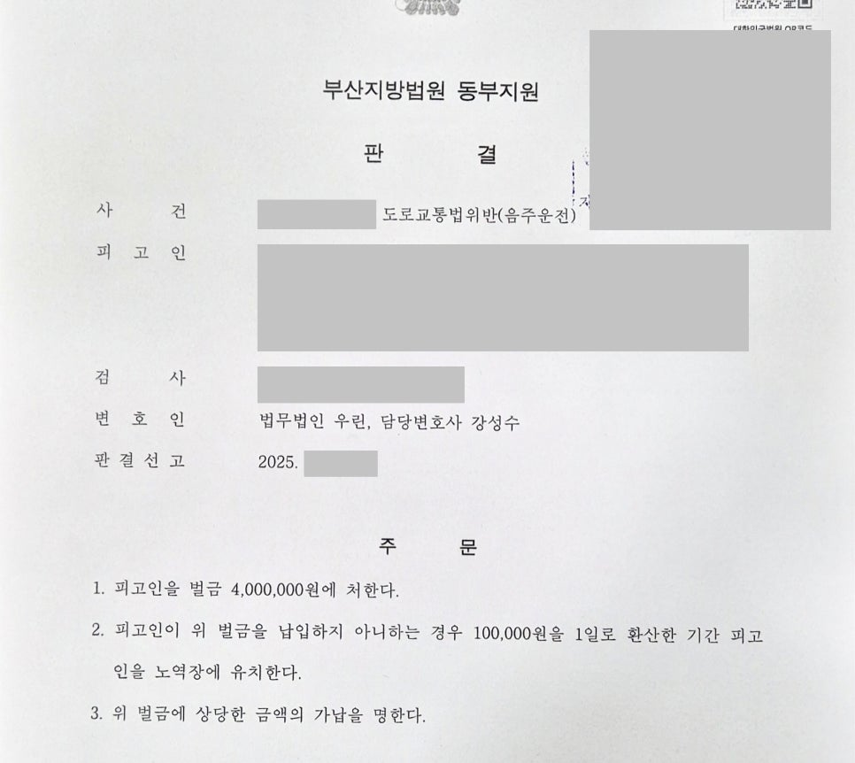

핵심 결과
음주운전 전력이 여러 차례 있고, 다른 재판을 받는 중 다시 음주운전으로 적발되었다면 실형 가능성이 매우 큽니다.
법원은 재판 중 재범을 매우 엄격하게 봅니다.
이번 사건은 의뢰인에게 음주운전 전력이 4회 있었습니다.
또 다른 사건으로 재판을 받던 중 다시 음주운전 단속에 적발된 상황이었습니다.
검찰은 실형을 구형했습니다.
하지만 법무법인 우린은 재범 방지 구조와 양형자료를 입체적으로 정리했고, 최종적으로 벌금 400만 원을 이끌어냈습니다.
| 구분 | 내용 |
|---|---|
| 사건 분야 | 음주운전 재범 |
| 불리한 전력 | 음주운전 전력 4회 |
| 가장 큰 위험 | 다른 재판 진행 중 다시 음주운전 적발 |
| 검찰 의견 | 실형 구형 |
| 주요 대응 | 음주 원인 분석, 차량 처분, 재범 방지 계획, 양형자료 정리 |
| 최종 결과 | 벌금 400만 원 |
사건 개요
의뢰인이 처음 상담을 왔을 때 상황은 매우 불리했습니다.
음주운전 전력이 4회 있었습니다.
그뿐만 아니라 다른 범죄로 재판을 받고 있던 중 다시 음주운전 단속에 적발되었습니다.
재판부 입장에서는 재범 위험성을 강하게 의심할 수밖에 없는 사건이었습니다.
“이미 여러 번 처벌받았는데도 다시 운전대를 잡았다.”
“재판을 받고 있는 중에도 다시 범행했다.”
이런 구조가 만들어지면 실형 가능성이 커집니다.
실형 위험이 컸던 이유
- 음주운전 전력이 4회 있었습니다.
- 다른 재판이 진행 중인 상태였습니다.
- 그 와중에 다시 음주운전으로 적발되었습니다.
- 검찰은 실형을 구형했습니다.
- 재판부가 재범 위험성을 높게 볼 수 있는 사건이었습니다.
이 상황에서는 단순한 반성문만으로 선처를 기대하기 어렵습니다.
음주운전 재범 사건에서 중요한 쟁점
음주운전 재범 사건은 “다시는 안 하겠습니다”라는 말만으로 부족합니다.
재판부는 실제로 다시 운전하지 않을 구조가 만들어졌는지를 봅니다.
특히 전과가 누적된 사건에서는 더 그렇습니다.
| 재판부가 보는 부분 | 의미 |
|---|---|
| 과거 전력 | 반복 범행인지 확인 |
| 재판 중 범행 여부 | 법을 가볍게 본 것은 아닌지 판단 |
| 음주 습관 | 재범 가능성 판단 자료 |
| 차량 보유 여부 | 다시 운전할 가능성 확인 |
| 생활 기반 | 사회 안에서 교정 가능한지 판단 |
핵심은 반성문 양이 아니라, 재범을 막을 실제 구조입니다.
해결 전략
1. 음주운전이 반복된 원인을 분석했습니다
전과가 많은 사건에서는 단순히 “죄송합니다”라고 말하는 것으로 부족합니다.
왜 같은 문제가 반복되었는지 확인해야 합니다.
의뢰인의 생활 패턴, 음주 습관, 운전 습관을 함께 점검했습니다.
그리고 그 원인을 끊기 위한 실제 행동 변화가 필요하다는 점을 정리했습니다.
2. 재범 방지 구조를 만들었습니다
재판부가 가장 궁금해하는 것은 하나입니다.
“이 사람이 다시 음주운전을 하지 않을 수 있는가.”
차량 처분, 음주 관련 교육, 생활 관리 계획, 가족의 감독 가능성 등 구체적인 재범 방지 자료를 준비했습니다.
말이 아니라 자료로 보여주는 방식이 필요했습니다.
3. 벌금형이 가능한 양형 구조로 재정리했습니다
검찰은 실형을 구형했습니다.
따라서 단순히 선처를 부탁하는 방향으로는 부족했습니다.
의뢰인이 사회 안에서 책임을 다하며 교정될 수 있는 이유, 구속보다 벌금형이 타당한 이유를 재판부가 납득할 수 있도록 정리했습니다.
| 대응 항목 | 준비한 내용 |
|---|---|
| 원인 분석 | 음주 습관과 운전 반복 원인 정리 |
| 재범 방지 | 차량 처분, 교육 수강, 생활 관리 계획 |
| 양형자료 | 가족 관계, 직업, 사회적 책임 자료 제출 |
| 법정 진술 | 형식적 사과가 아닌 구체적 재발 방지 약속 정리 |
| 변론 방향 | 실형보다 벌금형으로도 재범 방지가 가능하다는 점 강조 |
결과
검찰은 실형을 구형했습니다.
조건만 보면 실형 가능성이 매우 큰 사건이었습니다.
하지만 재판부는 의뢰인의 재범 방지 노력과 양형자료를 함께 검토했습니다.
그 결과 실형이 아닌 벌금 400만 원이 선고되었습니다.
최종 결과
음주운전 전력 4회, 재판 중 재범, 검찰 실형 구형이라는 불리한 조건에서도 벌금 400만 원이 선고되었습니다.
의뢰인은 구속을 피하고 일상으로 돌아갈 수 있었습니다.
음주운전 전과가 많을수록 필요한 대응
음주운전 전과가 누적된 사건은 가볍게 접근하면 안 됩니다.
인터넷에서 본 반성문 양식이나 탄원서만으로는 부족합니다.
재판부는 같은 말보다 구체적인 행동 변화를 봅니다.
차량을 어떻게 처리했는지, 술을 어떻게 끊을 것인지, 누가 관리할 수 있는지, 생활 기반은 어떤지까지 확인합니다.
전과가 많다고 무조건 포기할 필요는 없습니다.
다만 초기부터 자료를 제대로 준비해야 합니다.
결론
음주운전 4회 전력과 재판 중 재범은 실형 가능성이 높은 조합입니다.
검찰이 실형을 구형했다면 더 신중하게 대응해야 합니다.
하지만 재범 방지 구조와 양형자료를 제대로 준비하면 결과가 달라질 수 있습니다.
사무장·상담실장 없이 변호사가 직접 상담합니다
음주운전 재범 사건은 초기 전략이 중요합니다.
법무법인 우린은 강성수 변호사가 직접 상담하고, 사건 기록 검토부터 재범 방지 자료, 법정 변론까지 직접 진행합니다.
전과가 많거나 실형 구형이 걱정되는 상황이라면 먼저 사건 기록과 현재 상황을 정확히 확인해야 합니다.
이 글은 일반적인 법률 정보 제공을 위한 자료이며, 개별 사건의 결과를 보장하지 않습니다. 구체적인 대응은 사실관계와 증거에 따라 달라질 수 있습니다.